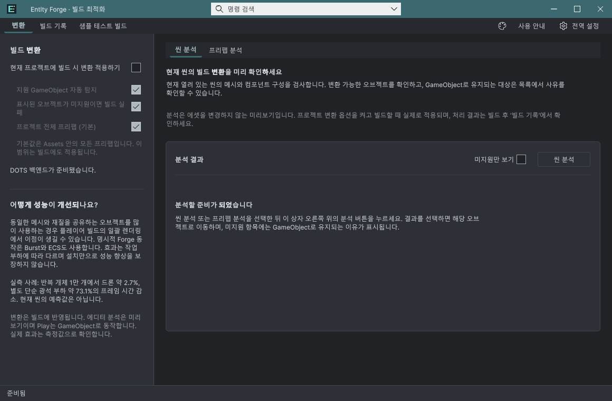
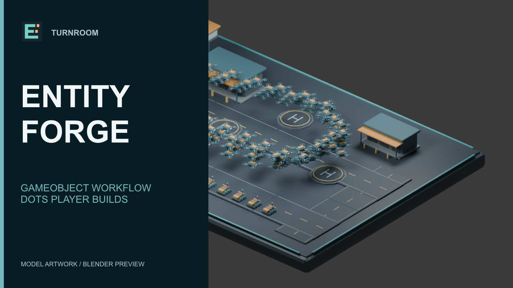

Tracefolio REPORTS & ISSUES
Tracefolio REPORTS & ISSUESEntity Forge 로고 배경 정리와 마케팅 자료 재제작
검증 대기로고와 갤러리 16장·키 이미지 4종·70초 영상 제작을 마쳤습니다. 원본 재열기와 영상 전체 디코딩을 검증했습니다.
작업 결과
기존 E와 조립 블록 심볼을 유지하고 남색 배경·여백을 정리했습니다. 픽소라 로봇을 복제한 첫 시안은 폐기했습니다.


변경 내용
적용 내용
남색 배경과 제품별 심볼을 정리하고 실제 Unity 촬영 자료를 새 Affinity 구성에 배치했습니다. 갤러리 16장과 커버·카드·아이콘·소셜 4종을 출력했습니다. 실제 Unity 샘플 촬영 영상과 새 마케팅 화면으로 70초 영상을 편집했습니다.


검증
Affinity 3.3.3.5004에서 제작·저장했습니다. 로고 2개와 제품별 마케팅 카드의 저장→닫기→재열기→재출력 PNG SHA-256이 각각 일치했습니다. H.264 1920×1080, 24fps, AAC 음성이 포함된 70초 영상의 전체 디코딩과 음성 신호 검사를 통과했습니다. 음악은 기존 승인된 Cipher / Kevin MacLeod, CC BY 3.0이며 출처·이용 조건을 영상 설명에 포함했습니다. ZIP 전체 항목의 CRC를 검사했습니다.
재부팅 후 Affinity를 BelowNormal·논리 CPU 2개로 제한하고 이미지와 영상 작업을 순차 실행했습니다. 확인 당시 Affinity 작업 메모리는 약 800~820MB였습니다. 시스템 이벤트 41은 비정상 종료만 확인하며 멈춤 원인은 미확인입니다.
남은 사항
새 영상 전체의 실제 청음·주관적 검수는 미실행입니다. 포털 업로드·저장값 대조·최종 제출은 수행하지 않았습니다. 이미지 안의 제품 UI와 게임 영상은 기존 실제 촬영 자료를 재사용했으며 모든 기능을 새로 촬영하거나 재검증한 것으로 보고하지 않습니다.
교훈 검토: 디자인 참조는 스타일을 공유하는 것이며 명시적 요청 없이 다른 제품 고유 심볼·캐릭터를 복제하지 않는 규칙을 전역 디자인 지침에 통합했습니다. CPU·메모리 제한과 순차 처리 규칙은 기존 지침을 적용했습니다.
작업 시간
- 제안 시간: 처음 20
40분(로고 510분 포함). 재부팅 후 515분, 공개 확인 35분 추가 예상. - 실제로 완료된 시간: 산출물·원본 재열기 검증 및 정리 시각 2026-11-04 23:35:10 KST. 재개 23:20:07 KST부터 15분 3초. 최초 마케팅 작업 시작 22:34:02 KST 이후 재부팅·중단 구간이 있어 순수 작업 시간을 분리 산정하지 않았습니다. 보고서 공개는 별도로 확인합니다.
- XERJ: 실패 — 작업 초반 XERJ 상태·검색 실행 시 노드 데이터 잠금 오류가 발생하여 rg와 현재 소스·실행 결과를 사용했습니다.